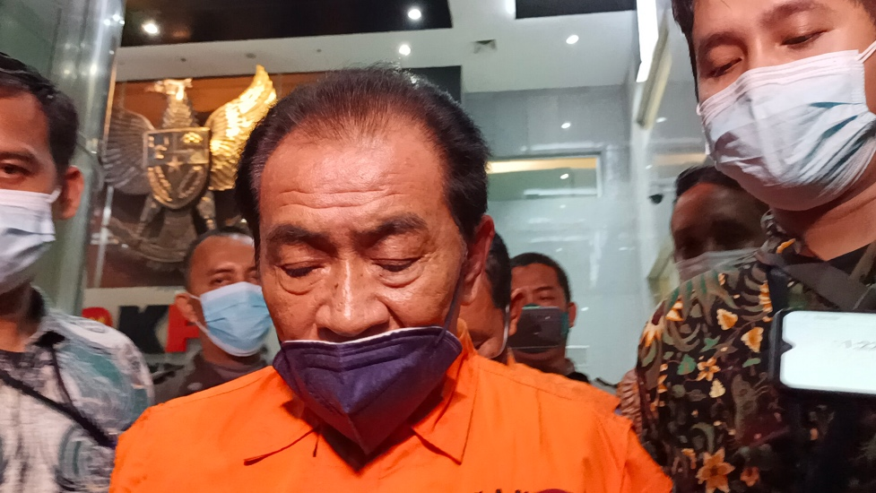

Bupati Banjarnegara di Tangkap KPK
Tim penyidik Komisi Pemberantasan Korupsi (KPK) akan melakukan pemeriksaan terhadap Sekda Pemkab Banjarnegara, Indarto, Selasa (7/12/2021).
Indarto diperiksa sebagai saksi terkait dugaan korupsi dalam pemborongan, pengadaan atau persewaan pada Dinas PUPR Pemkab Banjarnegara
Tahun 2017-2018 dengan tersangka Bupati Banjarnegara, Budhi Sarwono (BS).